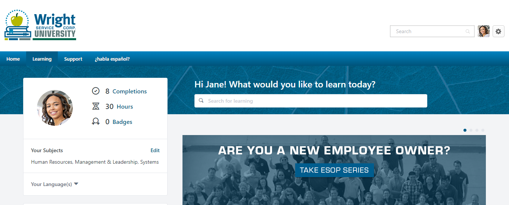
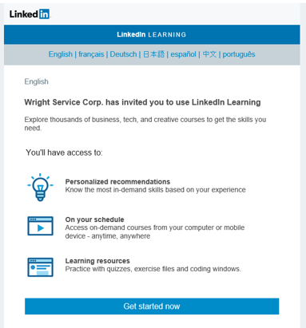
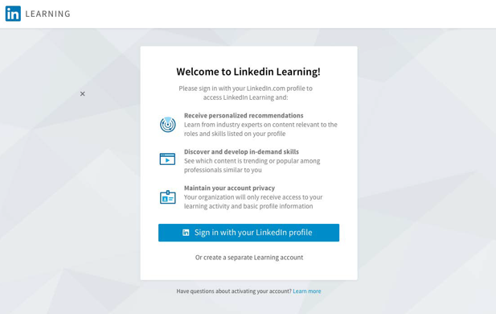
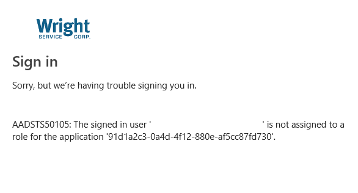

Getting Started
To get started with training on Wright Service Corp. University (WSCU), you can search for training from the home page or navigate to your transcript if you have been assigned training.
Search for training on the home page
After you log in, you will be redirected to the learner home page which will display a snapshot of your profile and list featured training available to you. You are also able to search from the top search bar to find something you are interested in learning. Use the filter on the left side to narrow down your search.
Assgined training
If you have been assigned training, you will need to access your transcript to launch the training. To do so, go to the Learning tab on the blue navigation bar and select View Your Transcript. From there, you are able to see in progress and assigned training. To launch the training, select the blue Launch button to the right of the title.
LinkedIn Learning
LinkedIn Learning is one of our primary training content providers that is integrated with WSCU. LinkedIn Learning provides online courses from leading industry experts with topics that range from business, creative, and technology. In order to take LinkedIn Learning courses, you must have an active license to do so. Your LinkedIn Learning license will be provided by Wright Service Corp. as soon as you have been added to WSCU.
Accept invite
After you have been added to WSCU, you will receive a LinkedIn Learning invitation from Wright Service Corp. Please accept this invitation as soon as possible as the link will expire after two days. If you happened to miss accepting the invitation, please reach out to LMSHelpDesk@wrightservicecorp.com to get another invitation. Select Get Started Now to accept the invitation.
Profile options
After you have accepted the invite, you have the option to connect you LinkedIn Learning account with your existing LinkedIn account or create a separate Learning account. If you happen to link your LinkedIn Learning profile with your personal account and would like to switch your work account, please contact LMSHelpDesk@wrightservicecorp.com.
Not able to access LinkedIn Learning from WSCU?
If you are not able to access or launch LinkedIn Learning courses from WSCU, please contact LMSHelpDesk@wrightservicecorp.com for assistance. Below is an image of an error if you are not in the LinkedIn Learning active directory group (this is used for Single Sign On).
LinkedIn Learning course not marking as complete
If you have watched a course or a custom learning path from WSCU, and it is not marking as complete you will need to reach out to LMSHelpDesk@wrightservicecorp.com for assistance. Please keep in mind to watch LinkedIn Learning courses from the window that is linked from WSCU. If you happen to link away to watch the course from linkedin.com/learning, the course will not mark as complete on your transcript on WSCU.
Transcript
Your transcript is where all of your assigned and elective training will be stored. To access your transcript, hover over the Learning tab in the blue navigation bar, and select, View Your Transcript.
Course Not Launching
Item description
Reports
Item description
Assign a Course
Item description
Reset Password
Item description
Profile
Item description
Language Preferences
Item description
Events Calendar
Item description
FAQ
Item description
More Help
If you encounter any issues or need help with Wright Service Corp. University, feel free to reach out to LMSHelpDesk@wrightservicecorp.com. Have a great day and stay safe.